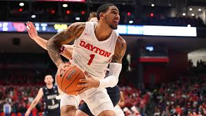
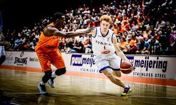

LAMELO BALL
Base de 18 años y 2,01 metros de altura que promedió 17 puntos, 7,6 rebotes, 6,8 asistencias y 1,6 recuperaciones por partido en los Illawarra Hawks (Australia). Posiblemente sea el jugador más mediático de todo el Draft debido a las siempre polémicas declaraciones de su padre, LaVar Ball. El caso de su hermano Lonzo ha servido para mostrar que cuanto más lejos están de su progenitor, mejor les van las cosas a los Ball. Tachado, y con razón, de individualista, en Australia se le ha visto bastante más maduro en su juego, aunque una lesión truncó su temporada antes de tiempo.
"MÁS SOBRE" LAMELO BALL
inicio
ANTHONY EDWARDS
Descripcion del jugador:
Escolta de 18 años y 1,96 metros de altura que promedia 19,1 puntos, 5,2 rebotes, 2,8 asistencias y 1,6 recuperaciones por partido con la Universidad de Georgia. Es uno de los diamantes de este Draft y aspirante al número uno por su proyección, explosividad y facilidad para anotar. Sus condiciones atléticas son excepcionales y hacen que sea un jugador muy difícil de frenar cuando está en carrera. Su principal aspecto a mejorar sería la toma de decisiones y su efectividad en el tiro desde la larga distancia.
"MÁS SOBRE" ANTHONY EDWARDS
inicio
JAMES WISEMAN
Descripcion del jugador:
Pívot de 18 años y 2,16 metros de altura que promedió 19,7 puntos, 10,7 rebotes y 3 tapones con la Universidad de Memphis. En condiciones normales estaríamos hablando de este jugador de 2,32 metros de envergadura como futuro número uno del Draft, pero un escándalo con su reclutamiento con los Tigers, previo pago de 11.500 dólares, le costó una sanción de 12 partidos en la NCAA y la decisión de abandonar la Univerisdad para preparar su salto a la NBA en solitario. Su físico es imponente.
"MÁS SOBRE" JAMES WISEMAN
inicio
DENI AVDIJA
Descripcion del jugador:
Alero de 19 años y 2,05 metros de altura que promedia 4 puntos, 2,6 rebotes y 1,2 asistencias con el Maccabi de Tel Aviv en la Euroliga. El siguiente gran prodigio europeo en dar el salto a la NBA. Todo un carácter ganador que esta temporada se está curtiendo en la que posiblemente sea la mejor competición del mundo fuera de la NBA bajo las órdenes del griego Giannis Sfairopoulos. En España se le conoce por su exhibición en la final del Europeo Sub 20 que privó a los Carlos Alocén y compañía de conseguir el oro.
"MÁS SOBRE" DENI AVDIJA
inicio
ONYEKA OKONGWU
Descripcion del jugador:
Ala-pívot de 19 años y 2,06 metros de altura que promedia 16,2 puntos, 8,6 rebotes, 1,1 asistencias, 1,2 recuperaciones y 2,7 tapones con la USC. Otro privilegiado físico capaz tantos de destrozar el aro con sus muelles (62,1% en tiros de campo) como de instalar el terror en la zona para proteger su canasta. Coincidió con LaMelo Ball en el instituto de Chino Hills y es determinante cuando está en la cancha tal y como muestra que sea el tercer mejor jugador de toda la NCAA en la estadística del +/-.
"MÁS SOBRE" ONYEKA OKONGWU
inicio
KILLIAN HAYES
Descripcion del jugador:
Base de 18 años y 1,96 metros de altura que promedió 12,8 puntos, 2,3 rebotes, 6,5 asistencias y 1,5 recuperaciones con el Ratiopharm ulm (Alemania) en la Eurocup. Otro talento europeo que pondrá rumbo a la NBA. A pesar de haber nacido en Lakeland (Florida), se crió en Francia, país en el que jugó su padre, DeRon Hayes. Forjado en la cantera del Cholet, con el que debutó con apenas 16 años, esta temporada ha brillado en Alemania siendo el tercer mejor pasador de la Eurocup y el segundo más joven en firmar un doble-doble en dicha competición después de Ricky Rubio.
"MÁS SOBRE" KILLIAN HAYES
inicio
OBI TOPPIN
Descripcion del jugador:
Ala-pívot de 22 años y 2,06 metros de altura que promedia 20 puntos, 7,5 rebotes, 2,2 asistencias, 1 recuperación y 1,2 tapones por partido con la Universidad de Dayton. Un talento de explosión tardía en la NCAA, pero que apunta estar en el 'Top 10' del Draft dada su fiabilidad de cara al aro: 69,8% en tiros de dos y 39% en triples. En SB Nation apuntan que tiene que mejorar mucho en defensa, pero la versatilidad que ha ganado con el tiro de tres le permite disponer de bastantes recursos a la hora de anotar.
"MÁS SOBRE" OBI TOPPIN
inicio
COLE ANTHONY
Descripcion del jugador:
Base de 19 años y 1,91 metros de altura que promedia 18,5 puntos, 5,7 rebotes, 4 asistencias y 1,3 recuperaciones por partido con la Universidad de North Carolina. Otro proyecto de base mediático y con talento cuya elección del Draft podría verse afectada por una lesión en el menisco que le tuvo dos meses apartado de las canchas. En Estados Unidos le catalogaron como un Kyrie Irving o un Damian Lillard en potencia y él lo justificó batiendo el récord anotador (34) de un debutante con North Carolina, el alma mater de Michael Jordan.
"MÁS SOBRE" COLE ANTHONY
inicio
THEO MALEDON

Descripcion del jugador:
Base de 18 años y 1,90 metros de altura que está promediando 7,4 puntos, 1,8 rebotes y 3,1 asistencias por partido con ASVEL Villeurbanne en la Euroliga. El enésimo prodigio que el baloncesto francés saca para el puesto de base tras los casos de Frank Ntilikina o Elie Okobo, ambos en la NBA. Este director de juego está cuajando un buen papel en la máxima competición europea exhibiendo además unos notables registros desde el triple (36,7%) pese a su juventud.
"MÁS SOBRE" THEO MALEDON
inicio
TYRESE HALIBURTON
Descripcion del jugador:
Base de 20 años y 1,96 metros de altura que promedia 15,2 puntos, 5,9 asistencias, 6,5 asistencias y 2,5 recuperaciones por partido con la Universidad de Iowa State. Una fractura en la muñeca izquierda hizo que su temporada finalizase mucho antes de lo que debería, pero aún así tuvo tiempo de demostrar que es un base que puede aportar en prácticamente todas las facetas del juego: anotación, dirección, defensa, rebote, etc. En verano se proclamó campeón del mundo Sub19 con Estados Unidos.
"MÁS SOBRE" TYRESE HALIBURTON
inicio
LEANDRO BOLMARO
Descripcion del jugador:
Alero de 19 años y 2,01 metros de altura que promedia 14,9 puntos, 2,7 rebotes, 3,6 asistencias y 1,8 recuperaciones por partido con el F.C. Barcelona en la LEB Plata. La última gran perla del baloncesto argentino que en el qu Barça fueron capaces de 'pescar', pero que podría abandonar el conjunto culé sin explotar definitivamente como ya hicieran otros jugadores como Mario Hezonja o Rodions Kurucs. Su versatilidad le permite actuar como base, puesto en el que ha disputado hasta 13 partidos con el primer equipo azulgrana: siete de Liga Endesa (4,4 puntos, 1,1 rebotes y 1,4 asistencias) y seis de Euroliga (1,8+0,8+2,3).
"MÁS SOBRE" LEANDRO BOLMARO
inicio
ISAAC OKORO
Descripcion del jugador:
Escolta de 19 años y 1,98 metros de altura que promedia 12,9 puntos, 4,4 rebotes y 2 asistencias por partido con la Universidad de Iowa State. En Estados Unidos hablan de este jugador como el mejor defensor de todo el Draft. Una mezcla de músculo, agilidad y disciplina táctica que le hacen poder desenvolverse hasta en cuatro posiciones diferentes en toda la cancha, desde base hasta ala-pívot. Quizás sea en ataque donde tenga el mayor margen de mejora.
"MÁS SOBRE" ISAAC OKORO
inicio
NICCOLO MANNION
Descripcion del jugador:
Base de 19 años y 1,91 metros de altura que promedia 14 puntos, 2,5 rebotes, 5,3 asistencias y 1,2 recuperaciones por partido con la Universidad de Arizona. La gran esperanza del baloncesto italiano junto con el madridista Matteo Spagnolo. Nacido en Siena, pero criado en Estados Unidos (Salt Lake City y Phoenix), fue catalogado como una promesa 'cinco estrellas' por parte de portales como ESPN aunque su falta de físico le ha hecho caer algunos puestos en las predicciones. No obstante, su talento esta fuera de duda.
"MÁS SOBRE" NICCOLO MANNION
inicio
ALEKSEJ POKUSEVSKI
Descripcion del jugador:
Pívot de 18 años y 2,13 metros de altura que promedia 10,8 puntos, 7,9 rebotes, 3,1 asistencias, 1,3 recuperaciones y 1,8 tapones por partido con el Olympiacos en la Segunda División de Grecia. Otro proyecto de jugador interesante que aterrizará procedente de Europa. Criado en Serbia, en el seno de una familia que escapó del conflicto bélico en Kosovo, el Olympiacos se hizo con su fichaje con apenas 15 años y ya ha debutado en Euroliga con el conjunto griego. De momento suple su falta de múscula con su buena mano desde el triple y su habilidad para repartir juego.
"MÁS SOBRE" ALEKSEJ POKUSEVSKI
inicio
TYRESE MAXEY
Descripcion del jugador:
Base de 19 años y 1,91 metros de altura que promedia 14 puntos, 4,3 rebotes y 3,1 asistencias por partido con la Universidad de Kentucky. Otro director de juego con proyección de futuro que antes de dar el salto a la NBA pasará por las manos del mítico John Calipari como ya hicieran Derrick Rose, John Wall, Devin Booker o De'Aaron Fox entre otros. Destaca su rapidez y su capacidad para generar ventajas a partir del bote.
"MÁS SOBRE" TYRESE MAXEY
inicio